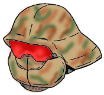
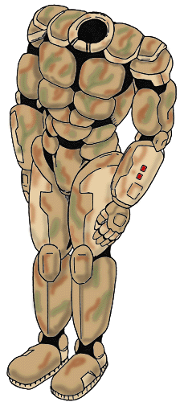

BARD PAPER: VERA5506
BARD PAPER: VERA5506
| Home
| Traveller
| BARD
| VERA
|
Pretorian Guard CommandoWear
design by Chris Griffen
Pretorian Guard, headquartered at Pretoria (Deneb: 0406), is a highly reputable manufacturer of military hardware and weaponry systems. The company's CommandoWear combat armor was created primarily for use by upscale mercenary units and Regency Frontier military personnel. It was designed first and foremost with stealth, sensor acuity and small-arms defense in mind. Perfect for commando operations of all kinds.
CommandoWear is the newest addition in Pretorian Guard's combat armor offerings, which include CavalryWear, AssaultWear and InfantryWear models.
Pretorian Guard CommandoWear
General Data
- Tech Level: 14
- Armor Value:
Chest: 6
Leg: 5
Arm: 5
Helmet: 6
- Initiative Penalty: AGL -1, INIT 0
- Armor Mass: 25 kg
- Stored Volume: 43 liters
- Endurance: Unlimited
- Armor Price: 18,851 Cr
- Power: None
- Fuel: None
- Standard Equipment: Equipped with environmental control, helmet sensor, chameleon surface, IR/LI faceplate, 30-km radio, integral hand computer and psi shield.
Helmet
The helmet of the Pretorian Guard CommandoWear Combat Armor is the showpiece of the suit. In its open state (shown below) the 30-km communicator headset is visible. The helmet includes a two-tiered configurable goggle piece with the following settings:
- Default - The front goggle tier features the helmet sensor heads-up package and standard flash suppression and UV protection.
- Infra-red/Light-intensifier - The second tier may be drawn if conducting operations in darkness. The combination IR/LI goggles enable the soldier to see in even the most adverse visibility conditions.
The helmet also features an integral psi-shield for protection against all forms of psionic assault and detection.
The helmet may be closed and sealed to provide protection in adverse atmospheric conditions. A portable life-support system (PLSS) may be carried on the back of the armor to provide breathability in vaccuum or trace atmospheric environments. PLSS connections are located in the rear base of the helmet.
Undersleeve
The mesh undersleeve provides enhanced protection at all of the major joints and works in concert with the armor shell's environmental control system for use in vaccuum and adverse environmental conditions.
The undersleeve also contains microelectronic synaptic transmitters that communicate body movements to the helmet sensor package. This enables the suit's sensory equipment to assist the wearer in combat maneuvers and to more accurately predict the relative location of the suit's owner to the target.
Armor Shell
The armor shell provides excellent protection against nearly all types of small arms and some heavy weapons. Made of latticed bonded superdense alloys, its light exoskeleton and plating protect the wearer from the physical wear and tear of the battlefield without causing major hindrances to reaction time or agility.
The armor plating is designed for maximum comfort and flexibility without sacrificing security around the joints. CommandoWear's chameleon surface provides camouflage in all environments. The illustrations below depict the chameleon surface plating in a rainforest environment.
An integral hand computer is included in one of the two forearm plates (configurable based on right- or left-handedness). In addition to the standard battlefield software suite, the hand computer contains software to adjust and maintain settings for the helmet sensory equipment.
Helmet, Open
Helmet, Sealed

|
Undersleeve
|
Armor Shell

|
Traveller is a registered trademark of Far Future Enterprises.
Portions of this material are © 1977-1999 Far Future
Enterprises
BARD Logo Copyright ©1996 by Lawrence C. Cox.